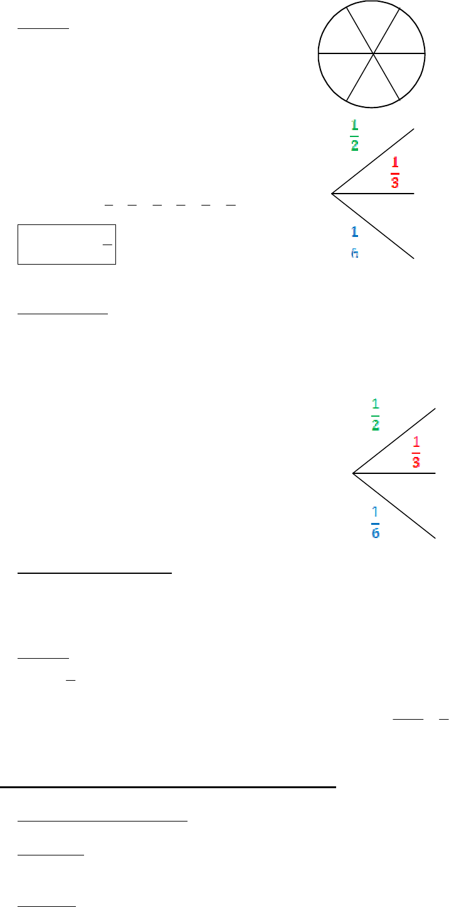

2/4
Exemple :
Dans l’exemple pr•c•dent,
on appelle S l’•v‚nement
… le num•ro sorti est sup•rieur ou •gal „ 2 †.
S est r•alis• si 2 ou 3 sortent.
D’apr‚s les calculs pr•c•dents,
(2) (3)
p p
.
Donc
( )
p S
.
Cons€quences :
Tout •v‚nement A a une probabilit• comprise entre 0 et 1. 0 ≤ p(A) ≤ 1.
Un •v‚nement A est dit impossible, s’il ne peut pas ƒtre r•alis•. p(A) = 0.
Un •v‚nement A est dit certain s’il est obligatoirement r•alis•. p(A) = 1.
Dans l’exemple pr•c•dent, si
A = … le num•ro 4 est sorti † et si
B = … le num•ro sorti est compris entre 1 et 3 †,
alors p(A) = 0 et p(B) = 1.
Donc A est impossible et B est certain.
c) Fr€quence et probabilit€
Lorsqu’on r•p‚te un grand nombre de fois une exp•rience al•atoire, la fr•quence de
r•alisation d’un •v‚nement devient proche de sa probabilit•.
Exemple : au jeu de pile ou face, la probabilit• de l’•v‚nement A = … pile est sorti † est
( )
p A
. Si on joue 1000 fois de suite, pile ne va pas sortir forc•ment 500 fois, mais la
fr•quence d’apparition de … pile † sera tr‚s proche de
( )
p A
.
2) EvÇnements incompatibles, ÅvÇnements contraires
a) Ev•nements incompatibles
D€finition : 2 €v•nements A et B sont incompatibles s’ils ne peuvent pas ƒtre r•alis•s en
mƒme temps.
Propri€t€ : Si 2 •v‚nements A et B sont incompatibles, la probabilit• que l’un ou l’autre se
r•alise est •gale „ la somme des probabilit•s.
1
2
3
Ne r•alise
pas S
1
2
3
1
11
2
2
3